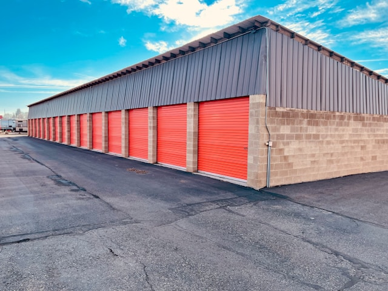

Almacena y recupera cualquier cantidad de datos desde cualquier lugar con la durabilidad, escalabilidad y seguridad líderes en la industria de AWS S3.
¡Empieza Gratis Hoy!Amazon Simple Storage Service (S3) es un servicio de almacenamiento de objetos que ofrece escalabilidad, disponibilidad de datos, seguridad y rendimiento líderes en la industria. Es una solución ideal para una amplia variedad de casos de uso, incluyendo alojamiento de sitios web estáticos, respaldo y restauración, almacenamiento de archivos para aplicaciones y lagos de datos.
Con S3, pagas solo por lo que utilizas, sin costos iniciales ni compromisos a largo plazo. Ofrece diferentes clases de almacenamiento para optimizar costos, desde acceso frecuente hasta archivado a largo plazo.
Sirve tu sitio web o aplicación web directamente desde S3, de forma segura y con alta disponibilidad.
Almacena copias de seguridad de tus bases de datos y aplicaciones de forma fiable y recuperable.
Base ideal para lagos de datos (data lakes), permitiendo análisis con herramientas de AWS como Athena y Redshift.
Opciones de almacenamiento de bajo costo como S3 Glacier para archivar datos que no se necesitan con frecuencia.
Aunque Amazon S3 es un servicio de almacenamiento en la nube, se basa en una infraestructura física robusta y segura para garantizar la durabilidad y disponibilidad de tus datos. Aquí te mostramos cómo se vería una parte de esa infraestructura.


Únete a millones de usuarios que confían en Amazon S3 para sus necesidades de almacenamiento.
¡Contáctanos Ahora!